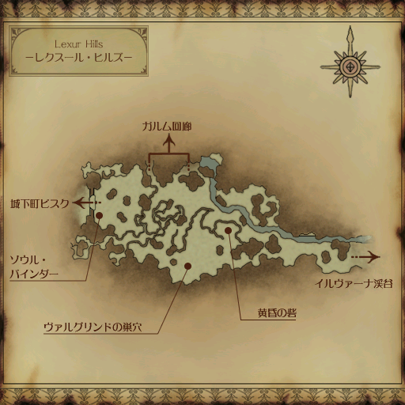

一覧釣りガイド：レクスール・ヒルズ
レクスール・ヒルズ の釣り場 3 か所（魚の出る位置 52）。
釣り場の地図

#1#2#3青い点が魚の出る位置、#番号が釣り場（3 匹以上）。点にマウスを合わせると魚の名前。
釣り場
地図の青い点が魚、赤がプレイヤーを襲うモンスターの出る位置。失敗マスはヒットゾーン 0・HP 満タンの魚のときのゲージに占める割合。
#1（魚 42 匹）
- 魚の数
- 42
- 広さ
- 774 m
- 再出現
- 2 分
- 魚の Lv
- 20〜40
釣れる魚
| 魚（出るたびに抽選） | 数 | おもなドロップ（1 匹あたり） | 失敗マス（スキル 30 / 60 / 90） |
|---|---|---|---|
| グリードル Lv 20〜22（15%）／グリードル Lv 23〜25（15%）／グリードル Lv 26〜29（20%）／グリードル Lv 35〜38（25%）／グリードル Lv 35〜38（22%）／グリードル Lv 38〜40（3%） | 42 | グリードル < 40cm > 0.2、グリードル < 41cm > 0.2、グリードル < 33cm > 0.2、グリードル < 22cm > 0.1 | 29% / 3% / 0% |
近くの敵
| モンスター | Lv | 行動 | 数 | 魚までの距離 |
|---|---|---|---|---|
| ブルーガ マンイーター | 27 | 格下アクティブ・リンク | 1 | 40 m |
#2（魚 5 匹）
- 魚の数
- 5
- 広さ
- 0 m
- 再出現
- 60 秒〜2 分
- 魚の Lv
- 1〜10
釣れる魚
| 魚（出るたびに抽選） | 数 | おもなドロップ（1 匹あたり） | 失敗マス（スキル 30 / 60 / 90） |
|---|---|---|---|
| レイク フィッシュ Lv 1〜3（10%）／レイク フィッシュ Lv 3〜5（25%）／レイク フィッシュ Lv 3〜5（30%）／レイク フィッシュ Lv 3〜5（32%）／レイク フィッシュ Lv 8〜10（3%） | 5 | レイク フィッシュ < 26cm > 0.3、レイク フィッシュ < 24cm > 0.3、レイク フィッシュ < 22cm > 0.2、レイク フィッシュ < 21cm > 0.1 | 3% / 0% / 0% |
近くの敵
プレイヤーを襲うモンスターは届かない。
#3（魚 5 匹）
- 魚の数
- 5
- 広さ
- 0 m
- 再出現
- 60 秒〜2 分
- 魚の Lv
- 1〜10
釣れる魚
| 魚（出るたびに抽選） | 数 | おもなドロップ（1 匹あたり） | 失敗マス（スキル 30 / 60 / 90） |
|---|---|---|---|
| レイク フィッシュ Lv 1〜3（10%）／レイク フィッシュ Lv 3〜5（25%）／レイク フィッシュ Lv 3〜5（30%）／レイク フィッシュ Lv 3〜5（32%）／レイク フィッシュ Lv 8〜10（3%） | 5 | レイク フィッシュ < 26cm > 0.3、レイク フィッシュ < 24cm > 0.3、レイク フィッシュ < 22cm > 0.2、レイク フィッシュ < 21cm > 0.1 | 3% / 0% / 0% |
近くの敵
プレイヤーを襲うモンスターは届かない。